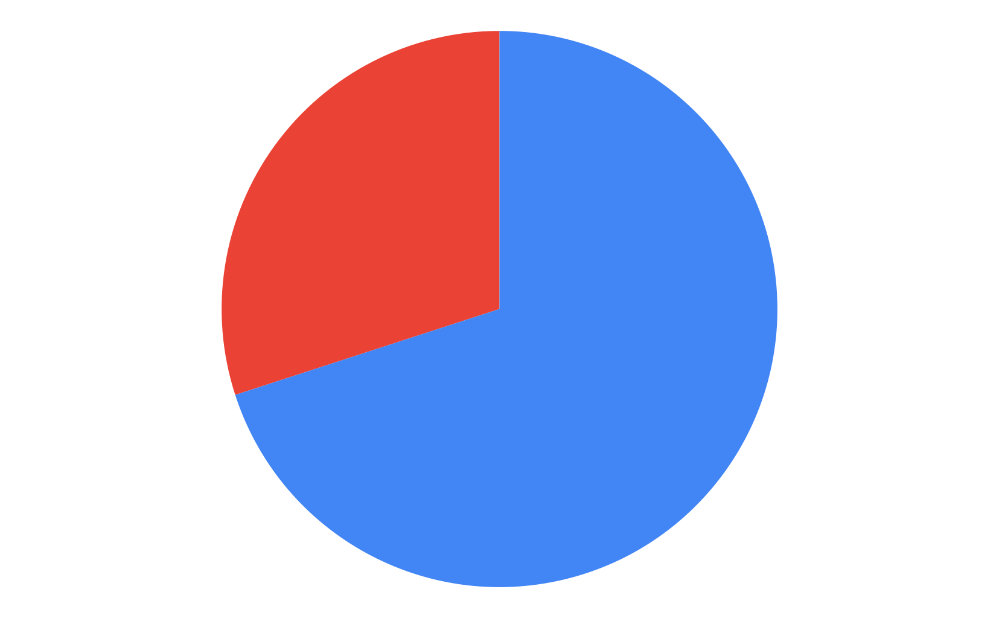

NutriLog
Logout
Admin Homepage
Request User Feedback
View Analytics
Active Users
2
Active Specialists
2
Open Specialist Requests
6
Closed Specialist Requests
13
API Requests Today
113
Number of Logins Today
17
